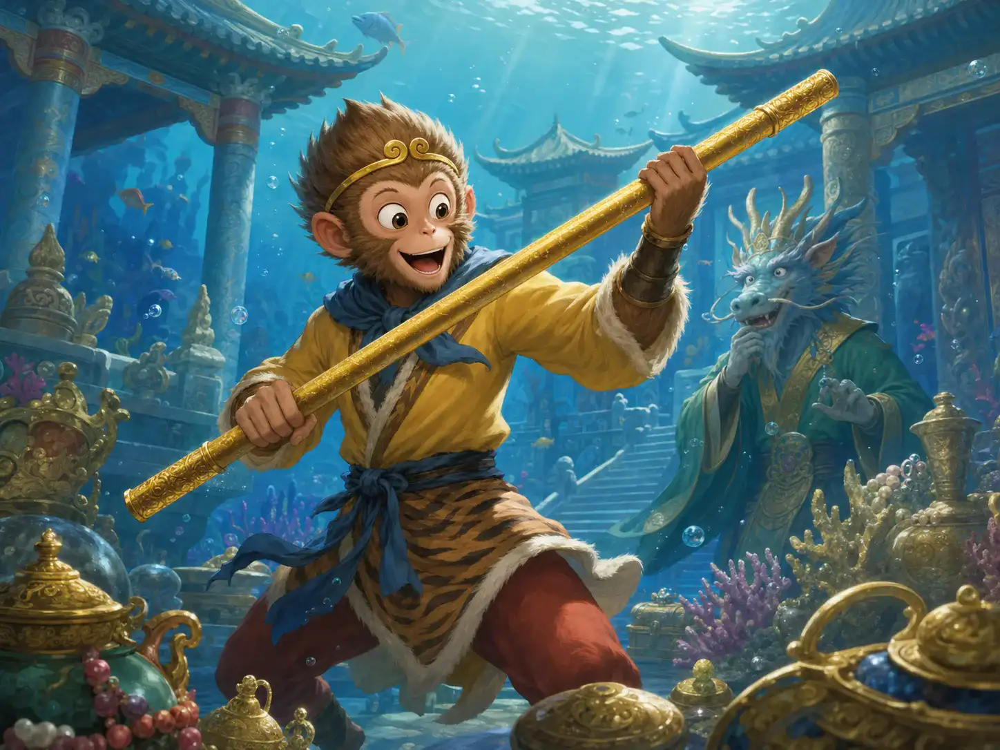
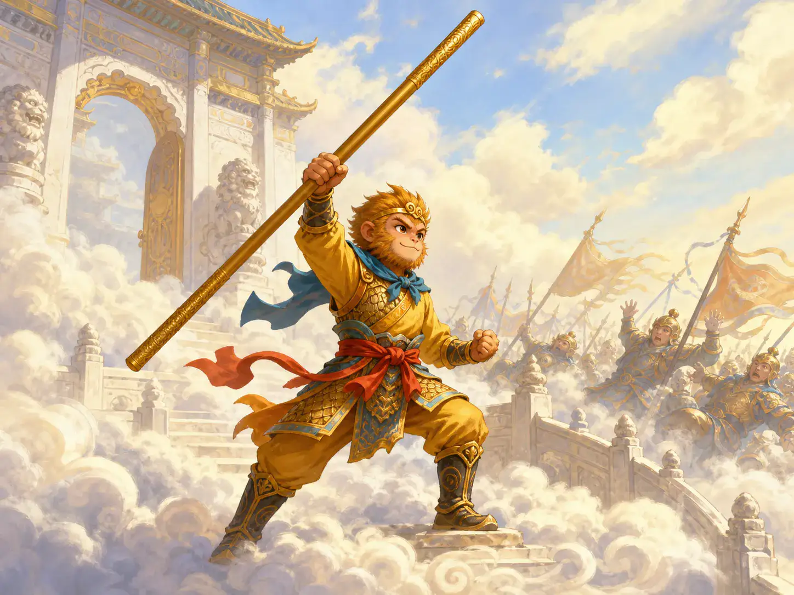
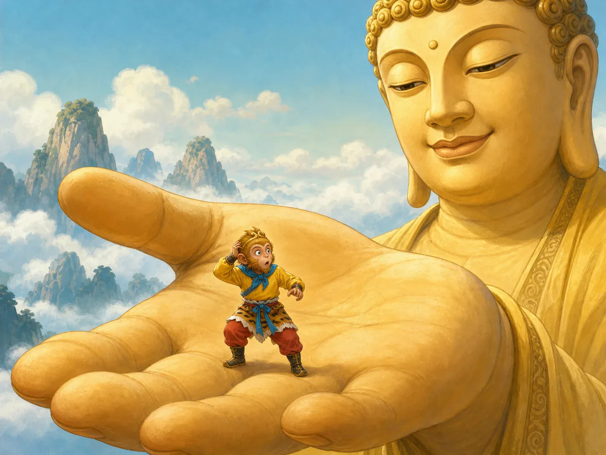
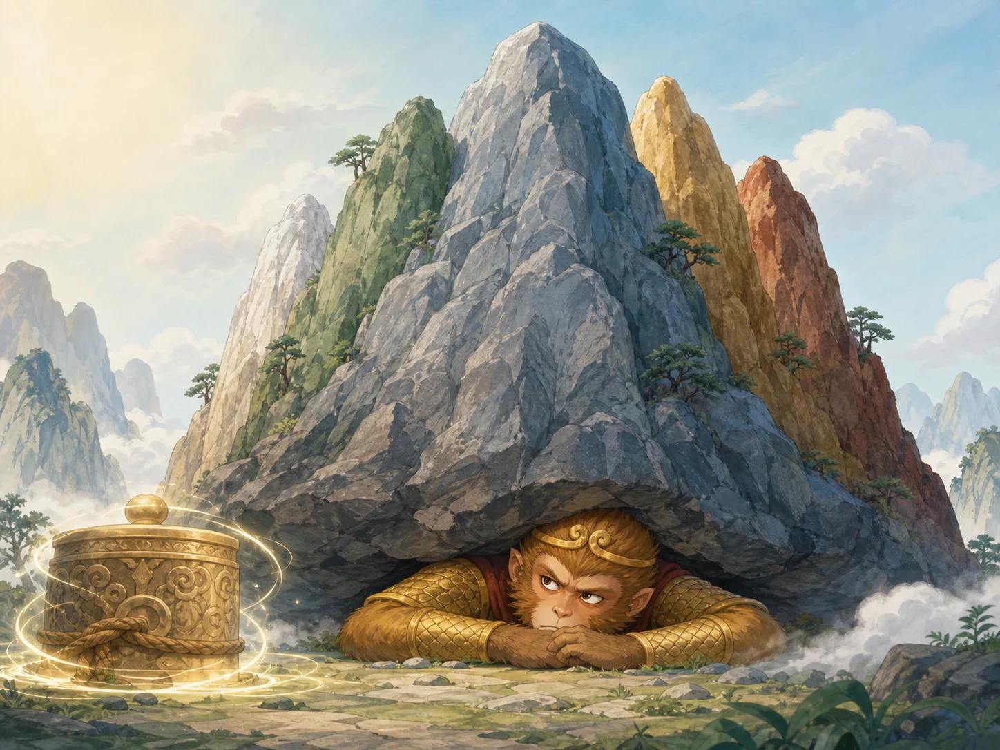

美猴王大闹天宫
The Monkey King Makes Trouble in Heaven
Page 1
一只不想守规矩的猴子
A Monkey Who Refuses to Follow Rules

Sun Wukong takes the golden staff, and from then on everyone knows this monkey will not stay quiet.
在《西游记》的故事里，孙悟空是一只本事很大的猴子。 他不想只待在花果山，还想去天上看看，甚至想当官。
他先去龙宫拿到了金箍棒，又去地府把自己和猴子的名字从生死簿上划掉。 这些事情都说明了一点：孙悟空一点也不想老老实实守规矩。
In Journey to the West, Sun Wukong is a monkey with enormous powers. He does not want to stay only on Flower-Fruit Mountain. He wants to go to heaven and even hold an important post.
First he takes the golden-hooped staff from the Dragon Palace, and then he crosses his own name and the names of his monkeys out of the book of life and death. All of this makes one thing clear: Sun Wukong has no wish to quietly obey the rules.
Page 2
天庭也拦不住他
Even Heaven Cannot Stop Him

Sun Wukong fights his way out of Heaven's gate and calls himself the Great Sage Equal to Heaven.
天庭给他安排了一个小官职，可是孙悟空发现这个职位并不重要，就大发脾气。 他打出南天门，回到花果山，还给自己起名叫“齐天大圣”。
后来，很多天兵天将来捉他，可是一个接一个都拦不住。 越想压住他，他闹得越厉害。
Heaven gives him a small official job, but when Sun Wukong learns it is not important, he becomes furious. He fights his way out of the Southern Heaven Gate, returns to Flower-Fruit Mountain, and gives himself the title "Great Sage Equal to Heaven."
Later, heavenly soldiers and famous warriors come to capture him, but one after another they fail. The more Heaven tries to press him down, the bigger his trouble becomes.
Page 3
如来佛的手掌心
In the Buddha's Palm

Sun Wukong thinks he has reached the end of the sky, but he is still inside the Buddha's palm.
最后，玉皇大帝请来了如来佛。 如来佛对孙悟空说：“如果你真这么厉害，就翻出我的手掌心吧。”
孙悟空一个筋斗翻了很远很远，以为自己已经到了天边，还得意地留下了记号。 可等他回来才发现，自己其实一直都没有离开如来佛的手掌心。
At last, the Jade Emperor asks the Buddha for help. The Buddha says to Sun Wukong, "If you are really that powerful, jump out of my palm."
Sun Wukong somersaults an enormous distance and thinks he has reached the end of the sky, proudly leaving a mark behind. But when he returns, he discovers that he never left the Buddha's palm at all.
Page 4
被压在五行山下
Under Five Elements Mountain

The monkey no one could control is at last pinned beneath Five Elements Mountain.
如来佛把手掌一翻，五根手指变成了五行山，把孙悟空压在山下。 从前谁也管不住的猴子，就这样被困了很久很久。
后来，去西天取经的和尚来到这里，揭掉封条，孙悟空才终于出来。 从这时候开始，他的故事也慢慢走向了另一条路。
The Buddha turns his hand over, and his five fingers become Five Elements Mountain, pressing Sun Wukong beneath it. The monkey no one could control is trapped there for a very long time.
Later, a monk traveling west for sacred books arrives and removes the seal, and only then is Sun Wukong free again. From that moment on, his story slowly begins to move in a different direction.
一只大家都记得的猴子
A Monkey No One Forgets
很多孩子一听孙悟空，就会马上喜欢上他，因为他大胆、热闹，又什么都不怕。
可是这个故事也在告诉大家：本事再大，心也要慢慢学会稳下来。
Many children love Sun Wukong right away because he is bold, lively, and afraid of nothing. But the story also teaches something else: even great power needs a steadier heart.